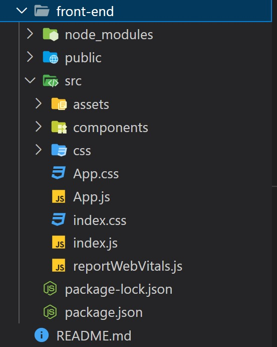
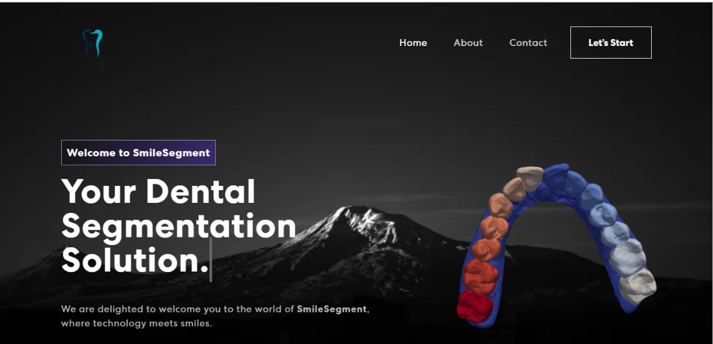
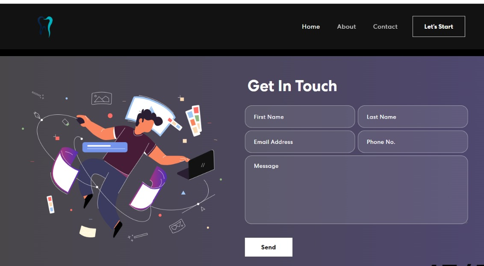
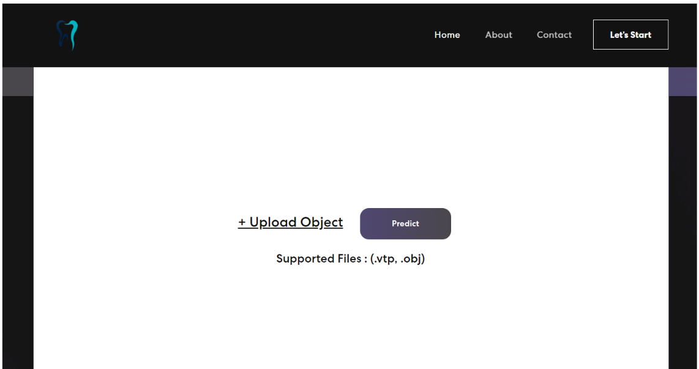

Bienvenue dans notre documentation pour le déploiement
Fonctionnalités du Projet
La partie de déploiement de notre projet est une étape cruciale pour réaliser des prédictions sur des objets 3D au format .vtp ou .obj et les visualiser dans notre site web. Cette phase est le pivot central de notre système, permettant aux utilisateurs de tirer pleinement parti de la technologie 3D pour une expérience enrichissante.
Notre objectif principal est d'offrir aux utilisateurs la capacité de télécharger des fichiers 3D, de les soumettre à un processus de prédiction, puis de visualiser les résultats de manière interactive sur notre site web. Pour atteindre cet objectif, nous avons mis en place une architecture en deux parties : le backend et le frontend.
La partie backend : assure le traitement des données, y compris la prédiction à l'aide du modèle MeshSegNet.
la partie frontend :offre une interface conviviale pour les utilisateurs
Technologies Utilisées
Configuration et Installation
1. Configuration de l'environnement virtuel
Un environnement virtuel est un environnement Python isolé qui permet de gérer les dépendances spécifiques à un projet sans interférer avec d'autres projets Python sur le même système. Voici comment créer et configurer un environnement virtuel pour votre projet:
-Installation de l'outil virtualenv:
Si vous n'avez pas déjà virtualenv installé sur votre système, vous pouvez l'installer en utilisant pip, qui est l'outil de gestion de paquets Python.
Ouvrez un terminal et exécutez la commande suivante :
pip install virtualenv
-Création de l'environnement virtuel:
Dans le répertoire racine de votre projet, créez un environnement virtuel en utilisant virtualenv. Remplacez nom_env par le nom que vous souhaitez donner à votre environnement virtuel : virtualenv nom_env. Cela créera un dossier avec le nom de votre environnement virtuel contenant une installation Python propre et isolée
-Activation de l'environnement virtuel:
Après avoir créé l'environnement virtuel, vous
devez l'activer. Selon votre système d'exploitation, la commande d'activation varie.
Sur Windows: nom_env\Scripts\activate.
Sur macOS ou Linux: source nom_env/bin/activate
2. Installation Backend
-Installation de Flask:
Dans l'environnement virtuel activé avant, utiliser lacommande suivante pour installer flask: pip install flask
-Installation des dépendances Python:
Utilisez pip pour installer les packages
Python nécessaires. Dans ce contexte, vous aurez probablement besoin de packages tels
que Flask, NumPy, Torch, vedo, Pandas, Spicy... Exemple: pip install flask numpy torch.
Pour lancer le serveur Backend, il faut accéder au dossier de backend, et puis exécuter la
commande python app.py
3. Installation Frontend
- Installation de Node.js et npm
Premièrement, il faut télécharger le fichier Windows Installer(.msi) ou macOS Installer(.pkg), puis terminer le processus d' installation et la lancer.
Pour lancer le serveur Frontend, il faut accéder au dossier de fronted et exécuter la
commande npm start.
Frontend
Cette partie est consacré pour entammer la partie Fontend de notre projet pour aider mieux à sa comprehension
1.Structure du Frontend
l'arbrorescente du Frontend est la suivante:

Vue d'ensemble
-node modules:
Ce répertoire contient toutes les dépendances externes installées pour le projet à l'aide de npm ou yarn.
npm install
-public: Ce répertoire contient les fichiers statiques et publics du projet, tels que les fichiers HTML de base.
-src: C'est le répertoire principal du projet contenant le code source.
assets: Ce répertoire contient des fichiers statiques utilisés dans l'application, tels que les polices (font) et les images (img).
components: Ce répertoire contient des composants React réutilisables utilisés pour construire l'interface utilisateur de l'application.
About.js: Un composant qui affiche des informations sur l'application ou l'équipe derrière le projet.
Banner.js: Un composant qui affiche un texte et une image animé.
Card.js: Un composant qui représente une carte ou un élément de contenu pouvant être utilisé pour afficher des informations.
Contact.js: Un composant qui affiche un formulaire pour contacter l'équipe de développement.
Footer.js : Un composant qui représente le pied de page de l'application, généralement avec des liens et des informations de copyright.
NavBar.js: Un composant qui représente la barre de navigation de l'application, généralement avec des liens vers les différentes sections du site.
Prediction.js: Un composant qui permet à l'utilisateur de télécharger un fichier, de le téléverser vers un serveur, d'obtenir une prédiction, de télécharger le résultat et d'afficher le résultat avec le composant Vis.
Qui utilise le Hooks UseState pour gérer plusieurs états, tels que selectedFile, predictionSuccess, predictionMessage, etc. Ces états sont utilisés pour suivre et mettre à jour l'état de la prédiction.
Dans ce composant il existe 3 fonctions fondamentales :
1- `HandleFileChange`: appelé lorsque l'utilisateur sélectionne le fichier a segmenté et elle met à jour l'état `selectedFile` avec le fichier sélectionné.
2- `HandleUpload `:est appelée lorsque l'utilisateur clique sur le bouton "Predict". Elle envoie le fichier téléchargé vers un serveur distant à l'aide d'une requête HTTP POST en utilisant la bibliothèque axios
```
const response = await axios.post('http://127.0.0.1:5000/predict', formData, {
responseType: 'blob',
});
// En cas de réussite, elle met à jour les états predictionSuccess, predictionMessage, et predictionFileURL pour afficher le résultat de la prédiction.
```
3- `handleDownload`: appelée lorsque l'utilisateur clique sur le bouton "Download the VTP file". Elle permet de télécharger le fichier résultant de la prédiction.
et en fin la fonction scrollToVis : Cette fonction fait défiler la page vers le composant Vis qui affiche la visualisation résultante à l'aide de VTk.js
vis.js : Un composant chargé pour la visualisation des données résultantes de la prédiction, en utilisant la bibliothèque vtk.js à partir des données reçues.
En résumé, ce composant offre des fonctionnalités pour personnaliser la visualisation, ajuster les paramètres de représentation, à l'aide de divers fonction telle que createViewer , createPipeline , updateRepresentation ** , updateOpacity ..
2.Interface Utilisateur
Page d'Accueil

Page d'informations


Page de contact

Page de Segmentation.

backend
lES OUTILS NECESSAIRES
1. Importations des bibliothèques
Liste des bibliothèques importées dans le code, Il est important de noter que meshsegnet et losses_and_metrics_for_mesh sont des fichiers personnalisés qui sont déjà utilisés dans l'entraînement du modèle .
import os
from meshsegnet import *
import vedo
from losses_and_metrics_for_mesh import *
from scipy.spatial import distance_matrix
from flask import Flask, request, send_from_directory, send_file
from flask_cors import CORS
os: Pour effectuer des opérations liées au système de fichiers.
meshsegnet: Importe les modules personnalisés du fichier meshsegnet. Ce fichier contient des définitions de modèles ou d'autres fonctions spécifiques à l'application.
vedo: Une bibliothèque pour la visualisation de maillages 3D. Il est utilisé pour afficher des visualisations 3D.
losses_and_metrics_for_mesh: Importe les modules personnalisés du fichier losses_and_metrics_for_mesh. Ce fichier contient des fonctions pour calculer des métriques ou des pertes spécifiques à l'application.
scipy.spatial.distance_matrix: Une fonction pour calculer des matrices de distance spatiale.
flask: Un framework web Python pour créer des applications web. Il est utilisé pour créer une application web Flask.
flask_cors: Une extension Flask pour gérer la politique CORS (Cross-Origin Resource Sharing). Elle permet à l'application d'accepter des requêtes depuis différents domaines.
2. Configuration de l'application Flask
L'application Flask est configurée en utilisant les lignes de code suivantes :
app = Flask(__name__, static_folder='C:/Users/adnane/Desktop/Stage3D/frontend/build', static_url_path='/')
CORS(app)
'__name__ ': Il s'agit d'un paramètre spécial qui indique le nom du module ou du package actuel. Cela est généralement utilisé pour aider Flask à déterminer les chemins vers les fichiers statiques et les templates.
static_folder: Ce paramètre spécifie le dossier où les fichiers statiques de l'application sont stockés. Dans ce cas, les fichiers statiques sont situés dans le répertoire 'C:/Users/adnane/Desktop/Stage3D/frontend/build'.
static_url_path : Ce paramètre définit le chemin d'accès URL sous lequel les fichiers statiques seront accessibles. Dans ce cas, les fichiers statiques sont accessibles sous le chemin URL '/'.
CORS(app) : Cette ligne de code active la prise en charge de CORS (Cross-Origin Resource Sharing) pour l'application Flask. CORS permet à des ressources Web d'être chargées à partir d'un domaine différent de celui de l'application, ce qui est souvent nécessaire lorsque l'application Flask communique avec des clients Web sur des domaines différents. Cette activation de CORS autorise des requêtes provenant de domaines externes à accéder aux ressources de l'application Flask.
3. Variables globales
Ce bloc de code définit un ensemble de variables globales utilisées dans l'application Flask.
upsampling_method = 'KNN'
model_path = './models'
model_name = 'MeshSegNet_Max_15_classes_72samples_lr1e-2_best.zip'
mesh_path = './data_test' # need to define
sample_filename = ""
output_path = './outputs'
if not os.path.exists(output_path):
os.mkdir(output_path)
num_classes = 15
num_channels = 15
device = torch.device('cpu')
upsampling_method: Cette variable est initialisée avec la chaîne de caractères 'KNN', ce qui suggère qu'elle est utilisée pour spécifier une méthode d'upsampling. Cela peut être une indication que l'application effectue une certaine forme de traitement de données ou d'interpolation, peut-être dans le contexte de données 3D.
model_path: Cette variable contient un chemin relatif ('./models') qui indique le répertoire où sont stockés les modèles. Il semble que l'application utilise des modèles pré-entraînés pour effectuer des prédictions ou des classifications.
model_name: Cette variable contient le nom du modèle spécifique ('MeshSegNet_Max_15_classes_72samples_lr1e-2_best.zip'). Il s'agit probablement du nom du modèle pré-entraîné que l'application chargera pour effectuer des opérations de prédiction ou de classification.
mesh_path: Cette variable contient un chemin relatif ('./data_test') qui indique le répertoire où se trouvent des données mesh ou des fichiers 3D. Cependant, la variable est laissée non définie ('need to define'), ce qui signifie que le chemin réel doit être spécifié ultérieurement.
sample_filename: Cette variable est initialisée avec une chaîne de caractères vide ('""'). Il semble que cette variable sera utilisée pour stocker le nom de fichier d'un échantillon ou d'une donnée mesh spécifique.
output_path: Cette variable contient un chemin relatif ('./outputs') qui indique le répertoire où les résultats de l'application seront stockés. Si le répertoire n'existe pas, le code crée ce répertoire à l'aide de os.mkdir(output_path).
num_classes : Cette variable est initialisée à 15. Elle semble indiquer le nombre de classes ou de catégories différentes que le modèle ou l'application traitera. Dans le contexte de l'apprentissage automatique, cela peut signifier qu'il y a 15 classes différentes à prédire ou à classer.
num_channels: Cette variable est également initialisée à 15. Le terme "channels" (canaux) est généralement utilisé dans le contexte de données multidimensionnelles, comme les images ou les données 3D. Cela peut signifier qu'il y a 15 canaux ou 15 caractéristiques différentes dans les données d'entrée ou dans le modèle.
device: Cette variable est initialisée avec l'objet torch.device('cpu'), ce qui signifie que l'application ou le modèle sera exécuté sur le processeur central (CPU) de l'ordinateur plutôt que sur un processeur graphique (GPU). L'utilisation du CPU est courante lorsque les ressources GPU ne sont pas disponibles ou nécessaires pour des tâches spécifiques.
PROCESS DE L'APPLICATION
1. Chargement du modèle pré-entraîné
Ces lignes de code concernent la création et le chargement d'un modèle d'apprentissage automatique.
model = MeshSegNet(num_classes=num_classes, num_channels=num_channels).to(device, dtype=torch.float)
checkpoint = torch.load(os.path.join(model_path, model_name), map_location='cpu')
model.load_state_dict(checkpoint['model_state_dict'])
del checkpoint
model = model.to(device, dtype=torch.float)
model = MeshSegNet(num_classes=num_classes, num_channels=num_channels).to(device, dtype=torch.float) : Cette ligne crée une instance du modèle MeshSegNet avec les paramètres num_classes et num_channels précédemment définis. Le modèle est ensuite déplacé sur le dispositif spécifié (CPU dans ce cas) et son type de données est défini sur torch.float.
checkpoint = torch.load(os.path.join(model_path, model_name), map_location='cpu') : Cette ligne charge un checkpoint (une sauvegarde) du modèle depuis un fichier spécifié par model_path et model_name. Le paramètre map_location='cpu' indique que le modèle doit être chargé sur le CPU, même s'il a été enregistré sur un GPU.
model.load_state_dict(checkpoint['model_state_dict']): Cette ligne charge les poids et les paramètres du modèle à partir du dictionnaire model_state_dict contenu dans le checkpoint. Cela initialise effectivement le modèle avec les poids pré-entraînés.
del checkpoint: Cette ligne supprime l'objet checkpoint de la mémoire une fois que les poids du modèle ont été chargés. Cela libère de la mémoire car le checkpoint n'est plus nécessaire.
model = model.to(device, dtype=torch.float) :Cette ligne déplace à nouveau le modèle sur le CPU et définit son type de données sur torch.float. Bien que cette ligne semble redondante par rapport à la première ligne, elle est importante car le chargement du checkpoint peut potentiellement modifier le dispositif sur lequel le modèle est situé, il est donc préférable de s'assurer qu'il est sur le CPU à la fin du chargement.
2. Fonction de traitement de la prédiction
La fonction process_prediction(uploaded_file) être responsable du traitement des fichiers de prédiction envoyés via une requête POST.
uploaded_file = request.files['meshFile']
if uploaded_file.filename.lower().endswith('.vtp'):
i_sample = '1.vtp'
elif uploaded_file.filename.lower().endswith('.obj'):
i_sample = '1.obj'
print('Predicting Sample filename: {}'.format(i_sample))
mesh = vedo.load(os.path.join(mesh_path, i_sample))
uploaded_file = request.files['meshFile'] : Cette ligne récupère le fichier téléchargé à partir de la requête HTTP en utilisant la clé 'meshFile'. La variable uploaded_file contient maintenant les informations sur le fichier téléchargé.
if uploaded_file.filename.lower().endswith('.vtp'):: Cette condition vérifie si le nom du fichier téléchargé se termine par l'extension .vtp. Elle utilise uploaded_file.filename pour obtenir le nom du fichier, le convertit en minuscules avec .lower(), puis utilise .endswith('.vtp') pour vérifier l'extension. Si c'est le cas, la variable i_sample est définie sur '1.vtp'.
elif uploaded_file.filename.lower().endswith('.obj'): : Sinon, cette condition vérifie si le nom du fichier téléchargé se termine par l'extension .obj. Si c'est le cas, la variable i_sample est définie sur '1.obj'.
print('Predicting Sample filename: {}'.format(i_sample)) : Cette ligne affiche le nom du fichier i_sample, qui sera utilisé pour la prédiction. Cela permet de suivre quel fichier est en cours de traitement.
mesh = vedo.load(os.path.join(mesh_path, i_sample)) :Cette ligne charge le fichier mesh à partir du chemin complet du fichier i_sample, en utilisant la bibliothèque vedo. Le mesh chargé est stocké dans la variable mesh pour être utilisé dans la suite du code.
if mesh.ncells > 10000:
print('\tDownsampling...')
target_num = 10000
ratio = target_num / mesh.ncells # calculate ratio
mesh_d = mesh.clone()
mesh_d.decimate(fraction=ratio)
predicted_labels_d = np.zeros([mesh_d.ncells, 1], dtype=np.int32)
else:
mesh_d = mesh.clone()
predicted_labels_d = np.zeros([mesh_d.ncells, 1], dtype=np.int32)
if mesh.ncells > 10000: : Cette condition vérifie si le nombre de cellules dans le mesh (mesh.ncells) est supérieur à 10 000. Si c'est le cas, cela signifie que le mesh est trop dense, et un échantillonnage est nécessaire pour réduire sa complexité.
print('\tDownsampling...') Si l'échantillonnage est nécessaire, cette ligne affiche un message "Downsampling..." pour indiquer qu'un échantillonnage est en cours.
target_num = 10000 Cette ligne définit le nombre cible de cellules après l'échantillonnage. Dans ce cas, le nombre cible est de 10 000 cellules.
ratio = target_num / mesh.ncells Cette ligne calcule le ratio entre le nombre cible de cellules (target_num) et le nombre de cellules actuel du mesh (mesh.ncells). Ce ratio sera utilisé pour déterminer combien de cellules doivent être conservées lors de l'échantillonnage.
mesh_d = mesh.clone() : Cette ligne crée une copie du mesh d'origine en utilisant la méthode .clone(). La copie sera utilisée pour effectuer l'échantillonnage tout en préservant le mesh d'origine.
mesh_d.decimate(fraction=ratio) : Cette ligne effectue l'échantillonnage (downsampling) du mesh en réduisant le nombre de cellules en fonction du ratio calculé. La méthode .decimate() réduit la complexité du mesh en supprimant certaines cellules tout en préservant la structure globale du mesh.
predicted_labels_d = np.zeros([mesh_d.ncells, 1], dtype=np.int32) : Cette ligne crée un tableau numpy rempli de zéros de taille [mesh_d.ncells, 1]. Ce tableau sera utilisé pour stocker les étiquettes prédites après la prédiction du modèle. La taille du tableau est basée sur le nombre de cellules du mesh échantillonné (mesh_d.ncells).
mesh_d = mesh.clone() : Dans ce cas, une copie du mesh d'origine est également créée, mais aucun échantillonnage n'est effectué. Le mesh échantillonné (mesh_d) est identique au mesh d'origine, et le tableau predicted_labels_d est également initialisé à zéro.
print('\tPredicting...')
points = mesh_d.points()
mean_cell_centers = mesh_d.center_of_mass()
points[:, 0:3] -= mean_cell_centers[0:3]
ids = np.array(mesh_d.faces())
cells = points[ids].reshape(mesh_d.ncells, 9).astype(dtype='float32')
mesh_d.compute_normals()
normals = mesh_d.celldata['Normals']
barycenters = mesh_d.cell_centers() # don't need to copy
barycenters -= mean_cell_centers[0:3]
print('\tPredicting...') Cette ligne affiche un message "Predicting..." pour indiquer que le processus de prédiction commence.
points = mesh_d.points() Cette ligne extrait les coordonnées des points du mesh échantillonné et les stocke dans la variable points.
mean_cell_centers = mesh_d.center_of_mass() ` Cette ligne calcule le centre de masse (barycentre) du mesh échantillonné mesh_d en utilisant la méthode center_of_mass(). Le résultat est stocké dans mean_cell_centers.
points[:, 0:3] -= mean_cell_centers[0:3] Cette ligne centre le mesh autour de son centre de masse en soustrayant les coordonnées du centre de masse mean_cell_centers des coordonnées de chaque point dans points. Cela permet de ramener le centre du mesh à l'origine (0, 0, 0).
ids = np.array(mesh_d.faces()) Cette ligne extrait les indices des faces du mesh échantillonné et les stocke dans ids.
cells = points[ids].reshape(mesh_d.ncells, 9).astype(dtype='float32') Cette ligne utilise les indices des faces (ids) pour extraire les coordonnées des sommets des triangles qui composent le mesh échantillonné. Les coordonnées sont ensuite mises en forme dans un tableau de forme [mesh_d.ncells, 9] où chaque ligne représente les coordonnées des trois sommets d'un triangle. Le tableau est converti en type de données float32.
mesh_d.compute_normals() : Cette ligne calcule les normales (vecteurs perpendiculaires) des faces du mesh échantillonné mesh_d en utilisant la méthode compute_normals(). Les normales sont utilisées pour déterminer l'orientation des surfaces.
normals = mesh_d.celldata['Normals'] Cette ligne extrait les normales calculées à partir du mesh échantillonné mesh_d et les stocke dans la variable normals.
barycenters = mesh_d.cell_centers() Cette ligne calcule les centres de chaque cellule (triangle) dans le mesh échantillonné mesh_d en utilisant la méthode cell_centers(). Ces centres de cellules sont stockés dans barycenters.
barycenters -= mean_cell_centers[0:3] Cette ligne centre également les centres de cellules autour du centre de masse du mesh en soustrayant les coordonnées du centre de masse mean_cell_centers des coordonnées des centres de cellules. Cela garantit que le mesh et les centres de cellules sont centrés autour de l'origine.
A_S = np.zeros([X.shape[0], X.shape[0]], dtype='float32')
A_L = np.zeros([X.shape[0], X.shape[0]], dtype='float32')
D = distance_matrix(X[:, 9:12], X[:, 9:12])
A_S[D < 0.1] = 1.0
A_S = A_S / np.dot(np.sum(A_S, axis=1, keepdims=True), np.ones((1, X.shape[0])))
A_L[D < 0.2] = 1.0
A_L = A_L / np.dot(np.sum(A_L, axis=1, keepdims=True), np.ones((1, X.shape[0])))
A_S = np.zeros([X.shape[0], X.shape[0]], dtype='float32') : Cela crée une matrice carrée A_S remplie de zéros, avec une dimension égale au nombre de points dans le mesh. Cette matrice représente l'adjacence à courte portée.
A_L = np.zeros([X.shape[0], X.shape[0]], dtype='float32') :De même, cela crée une matrice carrée A_L remplie de zéros, avec la même dimension que A_S. Cette matrice représente l'adjacence à longue portée.
D = distance_matrix(X[:, 9:12], X[:, 9:12]) : Cela calcule une matrice de distances D en utilisant la fonction distance_matrix de SciPy. Les colonnes de X sont extraites pour obtenir les coordonnées 3D des points (9:12 correspond aux colonnes des coordonnées dans X).
A_S[D < 0.1] = 1.0 : Cette ligne met à 1.0 toutes les entrées de la matrice A_S où les distances dans D sont inférieures à 0,1 unité. Cela signifie que les points situés à moins de 0,1 unité les uns des autres sont considérés comme voisins à courte portée.
A_S = A_S / np.dot(np.sum(A_S, axis=1, keepdims=True), np.ones((1, X.shape[0]))) : Cette ligne normalise la matrice A_S en divisant chaque ligne par la somme de ses éléments. Cela garantit que chaque ligne de la matrice A_S représente une distribution de probabilité sur les voisins à courte portée pour chaque point.
A_L[D < 0.2] = 1.0 : De manière similaire à A_S, cette ligne met à 1.0 toutes les entrées de la matrice A_L où les distances dans D sont inférieures à 0,2 unité. Cela signifie que les points situés à moins de 0,2 unité les uns des autres sont considérés comme voisins à longue portée.
A_L = A_L / np.dot(np.sum(A_L, axis=1, keepdims=True), np.ones((1, X.shape[0]))) : Comme pour A_S, cette ligne normalise la matrice A_L pour obtenir une distribution de probabilité sur les voisins à longue portée pour chaque point.
X = X.transpose(1, 0)
X = X.reshape([1, X.shape[0], X.shape[1]])
X = torch.from_numpy(X).to(device, dtype=torch.float)
A_S = A_S.reshape([1, A_S.shape[0], A_S.shape[1]])
A_L = A_L.reshape([1, A_L.shape[0], A_L.shape[1]])
A_S = torch.from_numpy(A_S).to(device, dtype=torch.float)
A_L = torch.from_numpy(A_L).to(device, dtype=torch.float)
tensor_prob_output = model(X, A_S, A_L).to(device, dtype=torch.float)
patch_prob_output = tensor_prob_output.cpu().numpy()
for i_label in range(num_classes):
predicted_labels_d[np.argmax(patch_prob_output[0, :], axis=-1) == i_label] = i_label
X = X.transpose(1, 0) : Cette ligne transpose la matrice X de sorte que les dimensions 0 et 1 soient échangées. Ensuite, la matrice X est réorganisée pour avoir une dimension supplémentaire à l'avant (ajoutant un axe) en utilisant reshape(). Ces étapes sont nécessaires pour préparer les données d'entrée du modèle de manière appropriée.
X = torch.from_numpy(X).to(device, dtype=torch.float) : Cette ligne convertit la matrice NumPy X en un tenseur PyTorch et le déplace vers le périphérique spécifié par device (CPU ou GPU) en utilisant .to(). De plus, le type de données du tenseur est défini sur torch.float.
A_S = A_S.reshape([1, A_S.shape[0], A_S.shape[1]]): Cette ligne réorganise la matrice NumPy A_S pour avoir une dimension supplémentaire à l'avant (ajoutant un axe). Cela est nécessaire pour préparer les données d'adjacence à être compatibles avec le modèle.
A_L = A_L.reshape([1, A_L.shape[0], A_L.shape[1]]): De même, cette ligne réorganise la matrice NumPy A_L pour avoir une dimension supplémentaire à l'avant.
A_S = torch.from_numpy(A_S).to(device, dtype=torch.float): Comme précédemment, cette ligne convertit la matrice NumPy A_S en un tenseur PyTorch et le déplace vers le périphérique spécifié par device en définissant le type de données sur torch.float.
A_L = torch.from_numpy(A_L).to(device, dtype=torch.float) : Cette ligne fait la même chose pour la matrice NumPy A_L.
tensor_prob_output = model(X, A_S, A_L).to(device, dtype=torch.float): Cette ligne effectue l'inférence du modèle en passant les données d'entrée X, A_S, et A_L au modèle model. Le résultat est un tenseur PyTorch contenant les probabilités prédites pour chaque classe. Le tenseur résultant est également déplacé vers le périphérique spécifié et son type de données est fixé à torch.float.
patch_prob_output = tensor_prob_output.cpu().numpy(): Cette ligne convertit le tenseur PyTorch tensor_prob_output en un tableau NumPy en utilisant .cpu().numpy(). Cela est nécessaire car les opérations ultérieures seront effectuées en utilisant NumPy.
for i_label in range(num_classes) : Cette boucle itère sur toutes les classes possibles (num_classes) pour effectuer des opérations spécifiques pour chaque classe.
mesh2 = mesh_d.clone()
mesh2.celldata['Label'] = predicted_labels_d
output_file_path = os.path.join(output_path, '1.vtp')
vedo.write(mesh2, output_file_path)
print('Sample filename: {} completed'.format(i_sample))
return output_file_path
mesh2 = mesh_d.clone() Cette ligne crée une copie du mesh échantillonné mesh_d en utilisant la méthode clone(). La nouvelle copie est stockée dans mesh2.
mesh2.celldata['Label'] = predicted_labels_dCette ligne ajoute des données de cellule appelées 'Label' à mesh2. Les valeurs de 'Label' sont définies à partir du tableau predicted_labels_d, qui contient les étiquettes prédites pour chaque cellule du mesh. Ainsi, chaque cellule du mesh est étiquetée avec la classe prédite.
output_file_path = os.path.join(output_path, '1.vtp') Cette ligne définit le chemin du fichier de sortie au format VTP (VTK Polygonal Data). Le fichier sera enregistré dans le répertoire de sortie spécifié par output_path avec le nom '1.vtp'.
vedo.write(mesh2, output_file_path) Cette ligne écrit le mesh mesh2, avec les données de cellule 'Label' ajoutées, dans le fichier de sortie spécifié par output_file_path. La fonction vedo.write() est utilisée pour effectuer cette opération.
print('Sample filename: {} completed'.format(i_sample)) Cette ligne affiche un message indiquant que la prédiction pour l'échantillon spécifique (déterminé par i_sample) est terminée.
return output_file_path Cette ligne retourne le chemin du fichier de sortie au format VTP généré. Ce chemin sera utilisé pour envoyer le fichier VTP en réponse à la requête POST.
3. Téléchargement de fichiers
La fonction download(uploaded_file) être utilisée pour sauvegarder un fichier téléchargé sur le système de fichiers.
def download(uploaded_file):
if uploaded_file.filename != '':
if uploaded_file.filename.lower().endswith('.vtp'):
filename = '1.vtp'
elif uploaded_file.filename.lower().endswith('.obj'):
filename = '1.obj'
uploaded_file.save(os.path.join(mesh_path, filename))
global sample_filenames
sample_filenames = [filename]
La fonction download(uploaded_file) être utilisée pour sauvegarder un fichier téléchargé sur le système de fichiers.
if uploaded_file.filename != '': : Cette condition vérifie si le nom du fichier téléchargé (uploaded_file.filename) n'est pas une chaîne vide, ce qui signifie qu'un fichier a été téléchargé.
if uploaded_file.filename.lower().endswith('.vtp'): : Cette condition vérifie si le nom du fichier téléchargé a une extension .vtp. Si c'est le cas, la variable filename est définie sur '1.vtp'. Sinon, si l'extension est .obj, la variable filename est définie sur '1.obj'.
uploaded_file.save(os.path.join(mesh_path, filename)) : Cette ligne enregistre le fichier téléchargé dans le répertoire mesh_path avec le nom de fichier filename. Cela permet de stocker le fichier sur le système de fichiers.
global sample_filenames : Cette ligne indique que vous allez utiliser une variable globale sample_filenames pour stocker le nom du fichier. Cette variable semble être utilisée ailleurs dans le code.
sample_filenames = [filename] : Cette ligne crée une liste sample_filenames contenant le nom du fichier filename. Cela peut être utile pour garder une trace des fichiers téléchargés pour le traitement ultérieur.
Le Benchmarking des Technologies Utilisées
1. Flask vs. Django (pour le backend)
-
Flask : Flask est un framework Python léger et minimaliste pour la création d'API web. Il convient aux applications de petite à moyenne taille.
-
Django : Django est un framework web Python plus complet qui offre plus de fonctionnalités intégrées pour le développement web. Il est idéal pour les applications web complexes.
-
Benchmark : Flask, connu pour sa légèreté et sa flexibilité exceptionnelle, a été choisi pour notre projet. Bien que Django offre une multitude de fonctionnalités intégrées qui améliorent la productivité, l'architecture légère et flexible de Flask correspondait davantage à nos besoins spécifiques.
2. React.js vs. Angular vs. Vue.js (pour le frontend)
-
React.js : React sont des bibliothèques JavaScript pour la création d'interfaces utilisateur interactives. Elles se concentrent sur la création de composants réutilisables.
-
Angular : Angular est un framework JavaScript complet pour le développement d'applications web. Il fournit une structure plus stricte et des fonctionnalités complètes.
-
Vue.js : Vue est un framework JavaScript progressif qui se situe entre React et Angular en termes de complexité.
-
Benchmark: En ce qui concerne React, il est largement adopté pour son approche conviviale et la robustesse de sa communauté de développeurs. En revanche, Angular convient mieux aux applications d'entreprise complexes. Vue constitue un choix intermédiaire, offrant convivialité pour les projets de petite à moyenne envergure. Étant donné la prévalence de la popularité de React.js, il présente l'avantage de disposer de solutions facilement disponibles pour résoudre les défis de codage, grâce à son vaste support communautaire.
3. VTK.js vs. Three.js (pour la visualisation 3D) :
-
VTK.js : VTK.js est une bibliothèque JavaScript basée sur le Visualization Toolkit (VTK) pour la visualisation 3D dans le navigateur.
-
Three.js : Three.js est une bibliothèque JavaScript populaire pour la création d'applications de visualisation 3D en temps réel.
-
Benchmark: Le choix entre VTK.js et Three.js dépend des caractéristiques particulières de votre application. VTK.js convient bien lorsque des capacités avancées de traitement de données scientifiques et médicales sont nécessaires, tandis que Three.js offre une plus grande polyvalence pour des visualisations 3D générales. Étant donné que notre projet implique une application médicale avec des besoins spécifiques de traitement des données, notre choix s'est porté sur VTK.js.
visualisation 3D avec VTK.js
1. Qui ce que c'est rt quelle utilité?
VTK.js, ou Visualization Toolkit for JavaScript, est une bibliothèque open source très puissante et polyvalente conçue pour la visualisation 3D dans les applications web.
- Large Écosystème : VTK.js s'appuie sur le célèbre kit de visualisation VTK (Visualization Toolkit) utilisé dans de nombreuses applications scientifiques et industrielles. Cela signifie qu'il bénéficie de nombreuses années de développement, de raffinement et d'une grande communauté d'utilisateurs.
- Support Multiplateforme : VTK.js est conçu pour être compatible avec une grande variété de navigateurs web modernes, ce qui facilite l'accès aux visualisations 3D sur différentes plates-formes, y compris les ordinateurs de bureau, les tablettes et les appareils mobiles.
- Personnalisable : L'une des forces de VTK.js réside dans sa capacité à être hautement personnalisable. Vous pouvez créer des visualisations sur mesure en utilisant des composants VTK.js, en ajustant l'apparence, en ajoutant des interactions utilisateur et en adaptant les fonctionnalités aux besoins spécifiques de votre application.
- Interopérabilité : VTK.js offre des fonctionnalités d'interopérabilité avec d'autres bibliothèques et technologies web couramment utilisées, telles que Three.js et WebGL, ce qui permet d'intégrer facilement des composants 3D dans des applications existantes.
- Utilisation dans Divers Domaines : VTK.js est largement utilisé dans divers domaines tels que la médecine, la recherche scientifique, l'ingénierie, la géoscience, la visualisation de données et la simulation. Il est particulièrement précieux pour afficher des modèles anatomiques, des simulations numériques, des cartes géographiques et des modèles architecturaux.
- Documentation Abondante : VTK.js bénéficie d'une documentation détaillée et de nombreux exemples, ce qui facilite l'apprentissage et le développement d'applications de visualisation 3D.
- Évolutif : La bibliothèque est en constante évolution, avec des mises à jour régulières qui ajoutent de nouvelles fonctionnalités et améliorent les performances.
En résumé, VTK.js est un outil précieux pour quiconque souhaite intégrer des visualisations 3D interactives dans des applications web, offrant une flexibilité, une puissance et une compatibilité multiplateforme inégalées.
2. Quels avantages ?
La visualisation 3D avec VTK.js offre une multitude d'avantages captivants pour les professionnels de divers domaines. Tout d'abord, elle permet une représentation tridimensionnelle immersive des données, ce qui facilite la compréhension des structures complexes et des phénomènes spatiaux. Ensuite, VTK.js offre une flexibilité remarquable en permettant la visualisation de données provenant de diverses sources, que ce soit des simulations scientifiques, des scans médicaux, ou des modèles architecturaux. De plus, grâce à sa compatibilité avec les navigateurs web, VTK.js rend la visualisation 3D accessible à un large public, sans nécessiter l'installation de logiciels spécifiques. Enfin, la possibilité d'interagir en temps réel avec les visualisations permet une exploration approfondie des données, favorisant ainsi la prise de décision éclairée dans des domaines tels que la recherche, la médecine, l'ingénierie, et bien d'autres encore. En somme, VTK.js révolutionne la manière dont nous analysons et comprenons les données en offrant une expérience de visualisation 3D immersive, accessible et flexible.